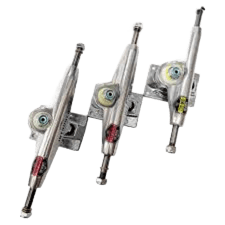
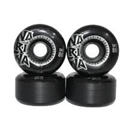
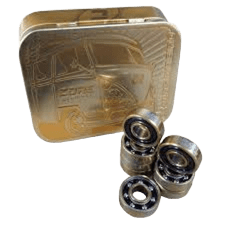
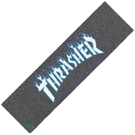

O “chão” do seu skate, geralmente em forma de popsicle para manobras street, mas também disponível em formatos old-school, cruiser e longboard, cada um indicado para um estilo de skate diferente


Veja mais
O “chão” do seu skate, geralmente em forma de popsicle para manobras street, mas também disponível em formatos old-school, cruiser e longboard, cada um indicado para um estilo de skate diferente
As peças de metal que conectam o deck às rodas; muito importantes para estabilidade e manobrabilidade, devendo ter largura compatível com o deck
Rodas (wheels) - Feitas de urethane; o tamanho (50-60 mm para street, 70 mm+ para longboard/cruiser) e a dureza (durometer entre 78A e 101A) influenciam na velocidade, conforto e tipo de terreno
Permitindo que as rodas girem com fluidez; modelos como Bones Reds são acessíveis e altamente eficientes .
A fita áspera que cobre o deck; essencial para manter os pés firmes no skate, particularmente importante em manobras e curvas.
As elevações nas extremidades do deck (nose e tail); fundamentais para ollies, flips e manobras street
.png)